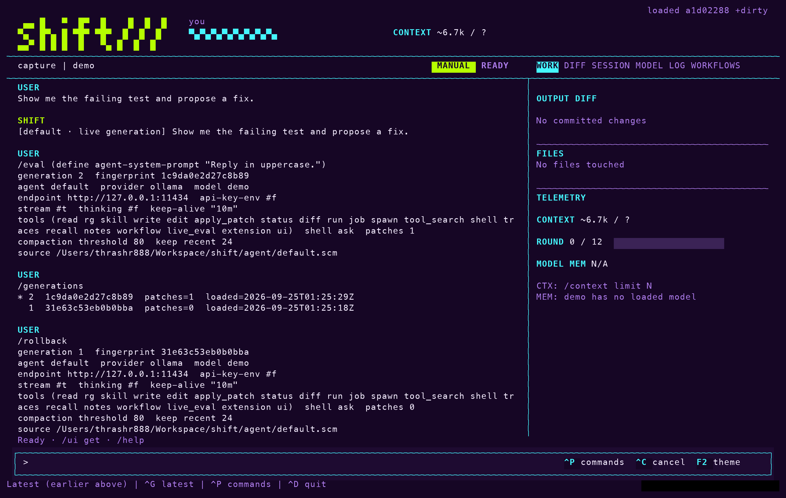

Docs > Change
The agent file
This page describes the agent file, the Scheme file that defines how a Shift session behaves, and the commands that change it while the session runs: /eval, /rollback, /reload and the extension commands. It also draws the line between what the file can change and what needs a restart.
What the file defines
Shift starts from agent/default.scm, or the file you pass with --agent. The file is ordinary Scheme: a set of define forms that the runtime loads as one generation of behavior. The definitions you are most likely to change are:
| Definition | What it controls | Default |
|---|---|---|
agent-system-prompt | The system prompt sent with every turn. | A prompt that names the tools, asks for concise answers, and tells the model to use live_eval when asked to change its own behavior. |
agent-tools | The tool names the model may call. The runtime owns each tool's implementation and its capability checks; the list only names them. | '(read rg skill write edit apply_patch status diff run job spawn tool_search shell traces recall notes workflow live_eval extension ui) |
agent-max-tool-rounds | How many tool rounds one turn may use. | 12 |
agent-shell-policy | Whether the shell tool asks before running or is refused. Only 'ask and 'deny are accepted. | 'ask |
agent-select-context | A function that receives the user's text and returns project-relative files to read into the turn as context. The runtime reads them through the confined read tool. | Returns '(). |
agent-transform-user | A function that rewrites the user's text before the model sees it. | Returns the text unchanged. |
The same file holds the provider, model, base URL, API key variable name, streaming, thinking, keep-alive and compaction settings. Providers covers those.
Change a definition in the running session
To redefine a binding without leaving the session, enter /eval followed by a Scheme form. The following turns replace the system prompt, use it once, and put it back:
shift> hello
assistant> ...answer streams here...
shift> /eval (define agent-system-prompt "Reply in uppercase.")
generation 2 ...
shift> hello
...response using the patched prompt...
shift> /rollback
generation 1 ...
shift> hello
...response using the restored prompt...To extend the prompt rather than replace it, build on the current value:
/eval (set! agent-system-prompt (string-append agent-system-prompt " Answer in one short paragraph."))The same form works for any definition in the table. Redefining agent-select-context, for example, changes which files every later turn reads first; string-contains and string-contains? are available inside it.
The model can make the same change through its live_eval tool. The default prompt tells it to explain the exact binding change before the call and to report the before and after generations when it returns, so the change is visible in the conversation rather than hidden in a file edit.
How a change is validated
Each /eval produces a new generation. The runtime evaluates the form in a fresh module, checks the result against the same authority ceiling it applies to the file at startup, and only then makes it the current generation, in one step. A form that fails evaluation or validation leaves the active generation untouched.
A turn that is already running keeps the generation it started with; only later turns see the new one. The boot line names the current generation and its fingerprint:
shift λ
default · generation 1 · 0123456789ab
qwen3.8:27b-mlx via ollama
stream on · thinking off · watch on
12 tools · shell ask · /help for commandsRoll back
To list the active generation and the ones you can return to, enter /generations.

To return to the previous generation, enter /rollback. The command restores the earlier definitions and reports the generation that is now active. Nothing is lost by trying a change: the generation you came from is still there.
Edit the file while Shift runs
In a terminal session, Shift watches the agent file. When you save a distinct version, the runtime rebuilds it in a fresh module, validates it as /reload would, and activates it as another generation. Patches you made with /eval are reapplied on top of the new file. An invalid or incomplete save is rejected once, with the reason written to the session journal, and the working generation stays active until the file changes again. Ordinary editor write patterns are therefore safe to iterate on.
The watcher has three controls:
--no-watchturns it off, so only/reloadpicks up the file.- Sessions with redirected input start with the watcher off; pass
--watchto turn it on there. /reloadloads the file on demand, and/reload-cleanloads it and drops the session's/evalpatches.
What a live change cannot do
The agent file is one half of Shift. The other half, the stable runtime under src/live-agent and the trusted built-ins under extensions/shift, owns validation, filesystem confinement, shell approval, transport and tracing. Changes to those files are not loaded into a running process. If they change on disk, the watcher keeps the working generation and asks for a restart before it accepts another agent image, so a newer image never crosses into an older runtime.
The split decides what a live change can reach:
| The agent file sets | The runtime keeps |
|---|---|
| Name, model, provider and system prompt | Evaluation, validation, atomic activation and rollback |
| Which tools are enabled, by name | What each tool may do: project-confined reads, searches, writes and edits |
| The tool round limit, compaction threshold and recent-message retention | The journal, the trace spans and the session checkpoints |
| Context selection and user-input transformation | The mode and the approval policy |
Shell policy, as deny or ask | The authority ceiling: no allow, and no process, filesystem, network, dynamic-loading or eval functions in the live language |
Note: A live change cannot grant new authority. It can narrow what the model does and reshape how it works, but the runtime's limits apply to every generation. To pick up a new runtime, enter /upgrade: it checkpoints the session, restarts the current install against it, and records the runtime version on every later trace.
Keep a change as an extension
In an unnamed session a live change is gone when the process ends. A named session keeps its active patches in its checkpoint and resumes with them, although the rollback stack does not survive a restart. To keep a change in any session, save it. An extension is a named Scheme artifact under extensions/*.scm that loads through the same validated generation boundary as the file. Extensions are created disabled, never load on their own, and never overwrite an existing name.
/extensions
/extension-create terse (set! agent-system-prompt "Answer in one short paragraph.")
/extension-load terse
/extension-disable terse
/extension-export repaired-session/extensionslists the artifacts and their state./extension-create NAME FORMwrites the form as a new, disabled artifact./extension-load NAMEactivates it as a generation./extension-enableis an alias./extension-disable NAMEturns it off again./extension-export NAMEcollects the session's current stack of live patches into one artifact, so a repaired session can be loaded again after a restart.
The model can run the same lifecycle with its extension tool. Ask it to save the current live changes as an extension named repaired-session, and it writes the artifact for you to enable. Named sessions keep active patches and generation continuity in their checkpoint; see Sessions.
What's next
- Providers for the model and provider definitions in the same file.
- Tool policy for the modes and approvals that live changes cannot alter.
- Sessions for how patches and generations persist across restarts.